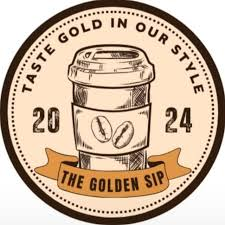

Golden Sip Café është një vend i ngrohtë dhe i rehatshëm, ku mund të shijoni kafe të freskët dhe pastritë të shijshme. Ofrojmë kafe klasike, ëmbëlsira të bëra vetë dhe ushqime të shëndetshme si tostin me avokado. Ideal për një moment relaksimi, punë apo takime me miq. Ejani dhe shijoni një përvojë të paharrueshme!
Na vizitoni: Rruga Nëna Tereza,Agim hajrizi
Email: GoldenSip1@gmail.com
Na thërrisni: +383 49 576 976
